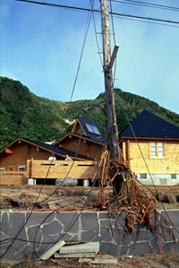

LOG on LOG
なぜ、総ログでなければならないのか。
ログハウスの安心・安全・快適は、分厚いログ壁が家全体を包み込むことではじめて実現する。
一階だけログで、二階は別の工法——それではログハウスの本質は届かない。
TALOが「総ログ」に拘る理由を、技術で裏付ける。
ログハウスとは、丸太（ログ）を水平に積み上げて壁をつくる建築方法である。しかし、すべてのログハウスが同じではない。
多くのログハウスメーカーは、1階部分だけをログ壁で積み、2階は一般的な木造軸組工法やパネル工法で仕上げる。コストを抑え、施工を簡易にするためである。外観はログハウスに見えるが、2階に住む家族はログハウスの恩恵を受けられない。
「総ログ」とは、1階から2階まで、すべての外壁をログで積み上げる構法のことである。TALOはこれを「総ログ」と呼ぶ。ログの上にログを積む。屋根の下まで、一切の妥協なく。
日本は世界のM6以上の地震の約20%が集中する地震大国である。ログハウスは、この国で住まいに求められる最も根本的な要件——耐震性において、際立った強さを持つ。
ログ壁は丸太を横に積み、一本一本をダボで接合して組み上げる。地震が発生すると、ログ同士の摩擦力が揺れのエネルギーを吸収し、建物全体がしなやかに変形して力を逃がす。これは一般住宅に後付けする「制震装置」と同じ原理が、構造そのものに組み込まれているということである。
さらに、一般住宅の3〜5倍の木材を使用するログハウスは重心が低く、揺れに対して本質的に安定している。
2007年、日本ログハウス協会が世界初の実物大ログハウス振動実験を実施。阪神淡路大震災と同等の揺れ（震度7・M7.3）を与えた結果、建物の傾きは数mm、亀裂は数箇所のみ。さらに1.5倍の巨大地震波でも倒壊は見られなかった。

1993年 北海道南西沖地震後の奥尻島。電柱が倒壊する中、TALOログハウスは損傷なく建っている。
1993年、奥尻島。
津波にも耐えた。
1993年7月、北海道奥尻島沖でM7.8の巨大地震が発生。直後に高さ21mの津波が島を襲い、大半の建物が全壊した。
しかし、TALOログハウスレストラン「波涛」は、建物はおろか店内の食器やコップもほとんど損傷しなかった。大きな津波を受けてもログハウスの内部には一滴の水も入らず、家をなくした人たちの緊急避難所として使われた。
このログハウスもTALOの特徴である木ダボ・妻面ログ積みで建築されている。ログを積み上げてダボと通しボルトで固定していく構造は、地震にも津波にも、粘り強く耐える。
2016年の熊本地震。各地に甚大な被害が発生する中、熊本県南阿蘇町に建つTALOログハウスは、内外ともに目に見える損傷がほとんどなかった。2階のミニチュアカーコレクションがわずかにずれた程度である。
この建物の直下率は80%を超えていた。2階までログを積む総ログ構造は上下階ともに壁式構造となるため、直下率が自然に高くなる。つまり、TALOがこだわってきた総ログ構造は、ログハウスの耐震性能を最大限に発揮する構造なのである。
加えてTALOは、より開放的な空間を実現するため、ノッチの代わりにログ壁を補強する独自の「サポートコラム」を開発し、特許を取得。間取りの自由度を高めつつ、構造上の強度を担保している。
「木は燃えやすい」——そのようなイメージはありませんか？
木材が燃焼すると、表面に炭素の層が形成される。この炭化層が酸素の供給を遮断し、内部への延焼を自ら食い止める。分厚いログ材の場合、燃焼が芯まで達する前に消えてしまうことが多い。逆に鉄やアルミニウムは熱で急激に軟化し、強度を失う。
さらに重要なのは、有害ガスの問題である。火災による死因の多くは焼死ではなく、煙と有害ガスによる中毒死である。合板や接着剤、新建材を多用する一般住宅とは異なり、無垢材で構成されるログハウスは有害ガスの発生を大幅に抑える。
総ログには、もう一つの大きな利点がある。1階のみログのログハウスでは、2階の妻壁にサイディングや薬剤を含浸した不燃木材を使用しなければならない。しかし総ログであれば、2階もログ壁そのもので耐火性能を確保できる。余計な建材を使わず、木だけで家を守る——それが総ログの強さである。
TALOは独自に耐火実験を行い、ログハウスの耐火性能と安全性を実証。2001年に「30分耐火」認定、2004年に「45分耐火」認定、さらに2013年にはログハウス業界で最も薄い壁厚での「60分耐火」認定を取得した。これにより、一定規模までの住宅であれば防火地域においてもログ壁のままでの建設が可能になった。
家が、家族を守る。
それが住まいの最も原始的な役割である。
日本の住環境における最大の敵は、湿度である。夏は湿度80%を超える高温多湿、冬は太平洋側で30%を下回る極端な乾燥。この年間50%以上の湿度差は、北欧にもヨーロッパにもない日本固有の課題である。
湿度が高ければカビ・ダニが繁殖し、アレルギーや喘息の原因になる。低ければ粘膜が乾燥し、ウイルスに感染しやすくなる。さらに壁内結露は、目に見えないところで構造材を腐朽させ、建物の寿命を著しく縮める。日本の木造住宅の寿命が30年程度と言われる一因がここにある。
無垢の木は、湿度が高ければ水分を吸い、乾燥すれば放出する。しかもログハウスは合板や防湿シートで壁を密閉しないから、壁内結露が起きにくい。機械に頼らず、素材そのものが四季の湿度変化に対応する——これが「呼吸する家」の実体である。
| ログハウス（総ログ） | 一般木造住宅 | |
|---|---|---|
| 壁の調湿 | 無垢材が自然に吸放湿 | ビニールクロス＋防湿シートで遮断 |
| 壁内結露 | 構造上、起きにくい | 発生リスクあり（構造材の腐朽原因） |
| 室内湿度 | 約40〜60%を自然維持 | 機械（加湿器・除湿器）に依存 |
| 化学物質 | ゼロ（合板・接着剤不使用） | 合板・接着剤を広範に使用 |
研究データによれば、厚さ4mm・1㎡のヒノキ板が吸収できる水分量は、8畳の部屋（25℃）の飽和水蒸気量に相当する。総ログの壁は厚さ100mm以上の無垢材が四面を囲むため、この調湿能力は桁違いに大きい。室内湿度50%は、空中浮遊菌の大半が死滅するとされる数値でもある。
断熱と蓄熱は異なる。断熱は熱の移動を「遮る」こと。蓄熱は熱を「溜めて、ゆっくり放出する」ことである。
分厚いログ壁は、昼間の太陽熱や暖房の熱をゆっくりと吸収し、夜間にじわじわと放出する。このため、ログハウスの室温は一日を通じて安定する。冬の朝、暖房を入れる前から感じるほのかな暖かさ。夏、帰宅したときのひんやりとした空気。これが蓄熱の効果である。
現代の高断熱住宅は薄い壁に断熱材を詰め込む。熱は遮れても溜められない。総ログの壁は「遮る」と「溜める」を一枚の壁で同時に実現する。
日本最古の木造建築である法隆寺は607年、ログハウスの原型である正倉院は759年に建てられた。1000年以上を経てなお現存する事実が、木という素材の耐久性を証明している。
木は伐採後、時間の経過とともに強度が増す。ヒノキは伐採後200年間、強度が上がり続けるとされる。新建材は完成した瞬間が最も美しく、以後は劣化していく。無垢の木はその逆である。
木が腐る原因は、過度な水分、酸素、温度、栄養の四要素が揃ったときに活動する腐朽菌である。十分に乾燥した材を使用し、結露を防ぐ設計と適切なメンテナンスがあれば、ログハウスは100年、200年と住み継ぐことができる。
地震から守る。火災から守る。日本の湿度から守る。そして、何十年経っても強くあり続ける。それは商品の差別化のためではない。この家に住む人の安心を、絶対に裏切らないという約束である。